الظنبوب والشظية والرضفةNormal Anatomy and Radiological Features of the Tibia, Fibula and Patella — Including Their Ossification Centers
نظري · م03 · 8.9 دقيقةأقسام المحاضرة (11)
- الظنبوب (قصبة الساق)The Tibia
- الجزء القريب من الظنبوبProximal Tibia
- جسم الظنبوبShaft of the Tibia
- الجزء البعيد من الظنبوبDistal Tibia
- كسور الظنبوبFractures of the Tibia
- الشظية وكسورهاThe Fibula and Its Fractures
- تعظّم الظنبوب والشظيةOssification of the Tibia and Fibula
- المظاهر الشعاعيةRadiological Features
- الرضفةThe Patella
- خلع الرضفة وكسرهاPatellar Dislocation and Fracture
- مركز تعظّم الرضفةOssification Center of Patella
الظنبوب (قصبة الساق)The Tibia
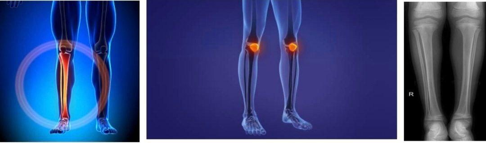
The tibia is the main bone of the lower leg, forming what is more commonly known as the shin.
الظنبوب هو العظم الرئيسي في الساق، ويكوّن ما يُعرف عادةً بقصبة الساق.
It expands at its proximal and distal ends; articulating at the knee and ankle joints respectively. The tibia is the second largest bone in the body and it is a key weight-bearing structure.
يتّسع عند طرفيه القريب والبعيد، ويتمفصل عند الركبة والكاحل على الترتيب. والظنبوب ثاني أكبر عظم في الجسم، وهو بنية رئيسية في تحمّل الوزن.
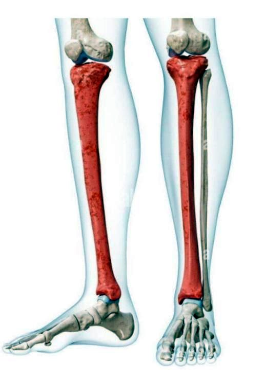
الجزء القريب من الظنبوبProximal Tibia
الجزء القريبProximal
The proximal tibia is widened by the medial and lateral condyles, which aid in weight-bearing. The condyles form a flat surface, known as the tibial plateau. This structure articulates with the femoral condyles to form the key articulation of the knee joint.
يتّسع الجزء القريب من الظنبوب باللقمتين الإنسية والوحشية، اللتين تساعدان على تحمّل الوزن. وتكوّن اللقمتان سطحاً مستوياً يُعرف بالهضبة الظنبوبية. وتتمفصل هذه البنية مع لقمتي الفخذ لتكوّن المفصل الرئيسي لمفصل الركبة.
Located between the condyles is a region called the intercondylar eminence – this projects upwards on either side as the medial and lateral intercondylar tubercles. This area is the main site of attachment for the ligaments and the menisci of the knee joint.
بين اللقمتين منطقة تُسمّى البارزة بين اللقمتين، وتبرز نحو الأعلى على الجانبين بشكل الحديبتين بين اللقمتين الإنسية والوحشية. وهذه المنطقة هي المكان الرئيسي لارتكاز أربطة مفصل الركبة وغضاريفه الهلالية.
The intercondylar tubercles of the tibia articulate with the intercondylar fossa of the femur.
تتمفصل الحديبتان بين اللقمتين في الظنبوب مع الحفرة بين اللقمتين في عظم الفخذ.
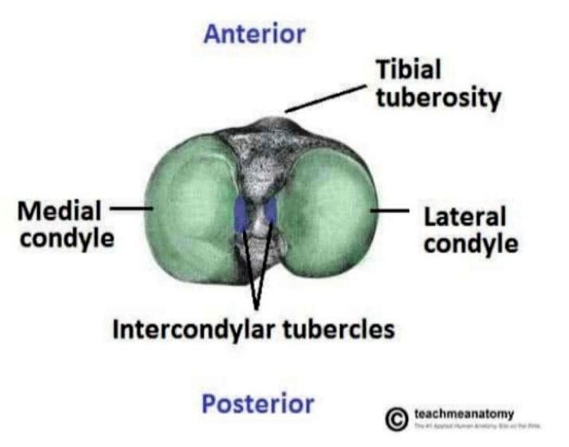
The tibial plateau. The tibial condyles articulate with the femoral condyles to form the knee joint
الهضبة الظنبوبية. تتمفصل لقمتا الظنبوب مع لقمتي الفخذ لتكوين مفصل الركبة.
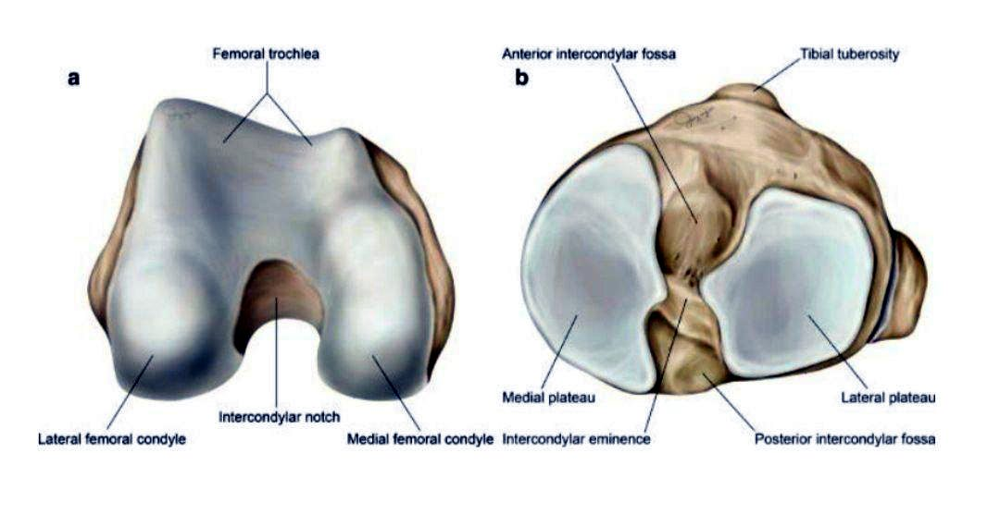
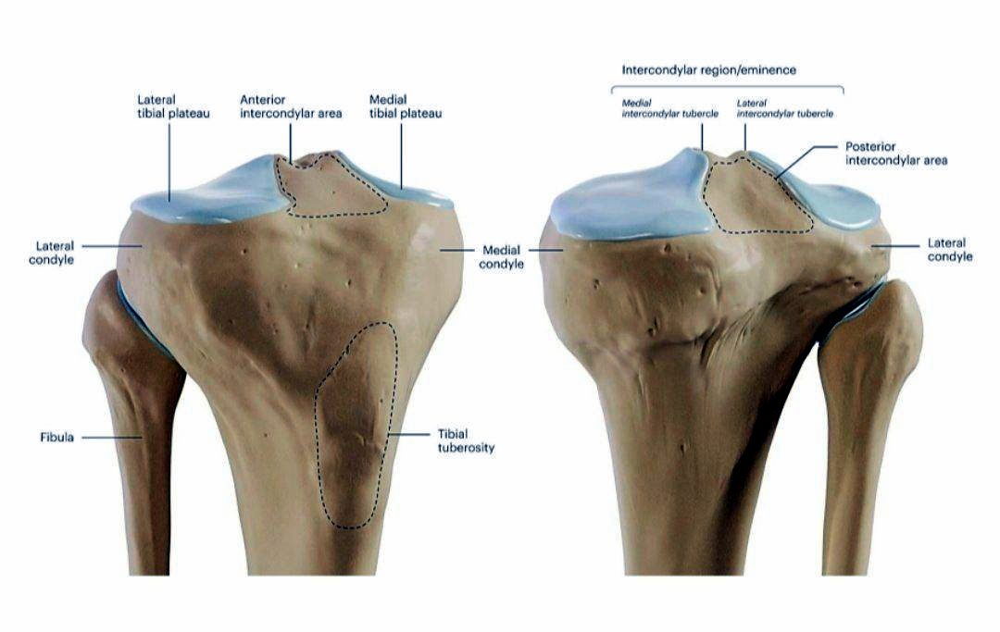
جسم الظنبوبShaft of the Tibia
جسم الظنبوبShaft
The shaft of the tibia is prism-shaped, with three borders and three surfaces; anterior, posterior and lateral. For brevity, only the anatomically and clinically important borders/surfaces are mentioned here.
جسم الظنبوب منشوري الشكل، له ثلاث حواف وثلاثة سطوح: أمامي، وخلفي، ووحشي. وللاختصار نذكر هنا الحواف والسطوح المهمة تشريحياً وسريرياً فقط.
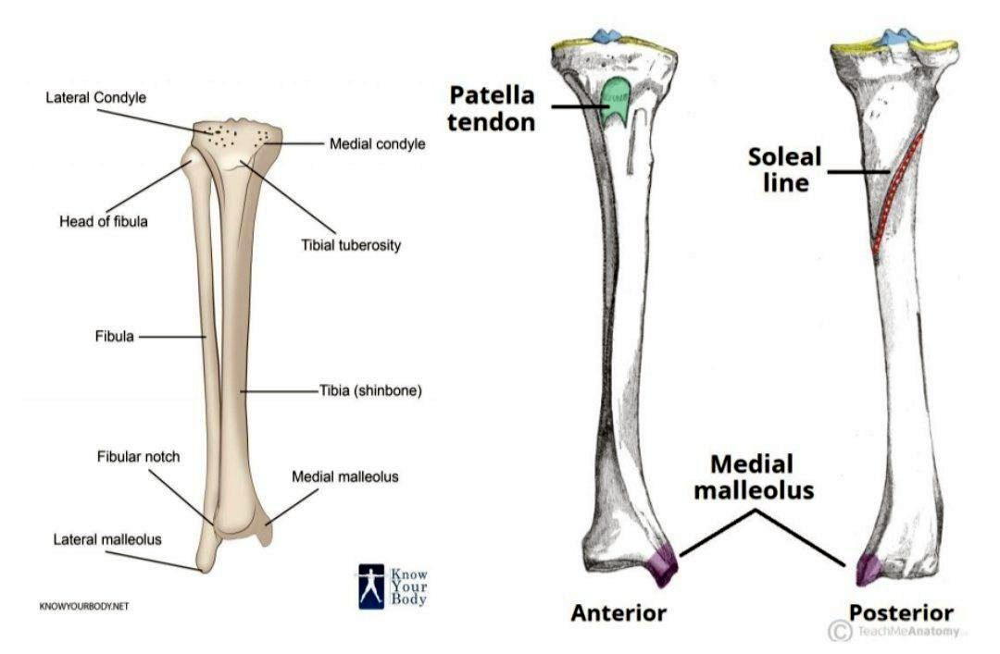
الجزء البعيد من الظنبوبDistal Tibia
الجزء البعيدDistal
The distal end of the tibia widens to assist with weight-bearing.
يتّسع الطرف البعيد من الظنبوب ليساعد على تحمّل الوزن.
The medial malleolus is a bony projection continuing inferiorly on the medial aspect of the tibia. It articulates with the tarsal bones to form part of the ankle joint. On the posterior surface of the tibia, there is a groove through which the tendon of tibialis posterior passes.
الكعب الإنسي ناتئ عظمي يمتد نحو الأسفل على الجهة الإنسية من الظنبوب. ويتمفصل مع عظام الرصغ ليكوّن جزءاً من مفصل الكاحل. وعلى السطح الخلفي للظنبوب أخدود يمر فيه وتر العضلة الظنبوبية الخلفية.
Laterally is the fibular notch, where the fibula is bound to the tibia – forming the distal tibiofibular joint.
ومن الجهة الوحشية توجد الثلمة الشظوية، حيث ترتبط الشظية بالظنبوب، مكوّنةً المفصل الظنبوبي الشظوي البعيد.
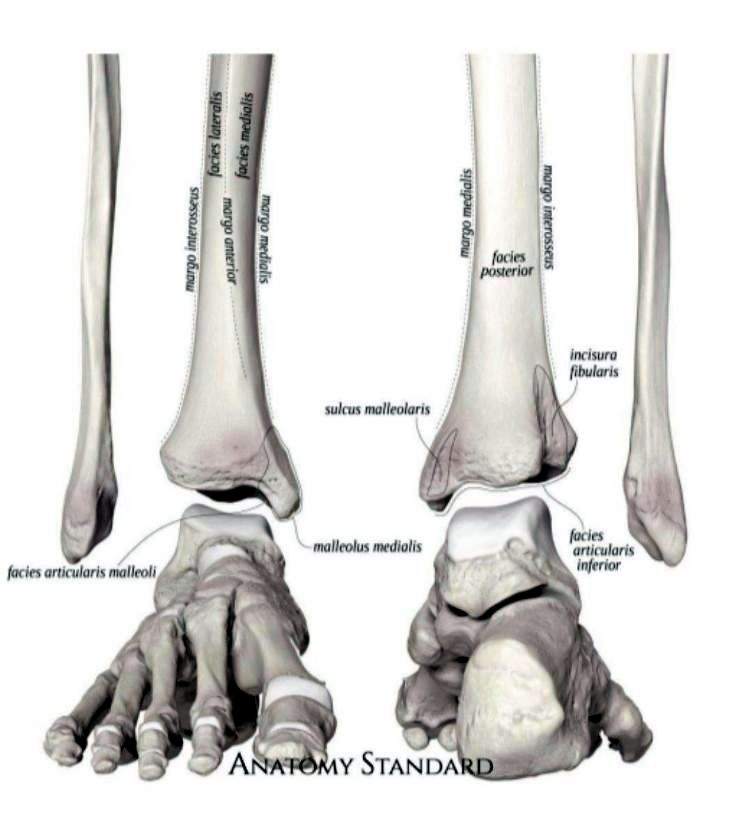
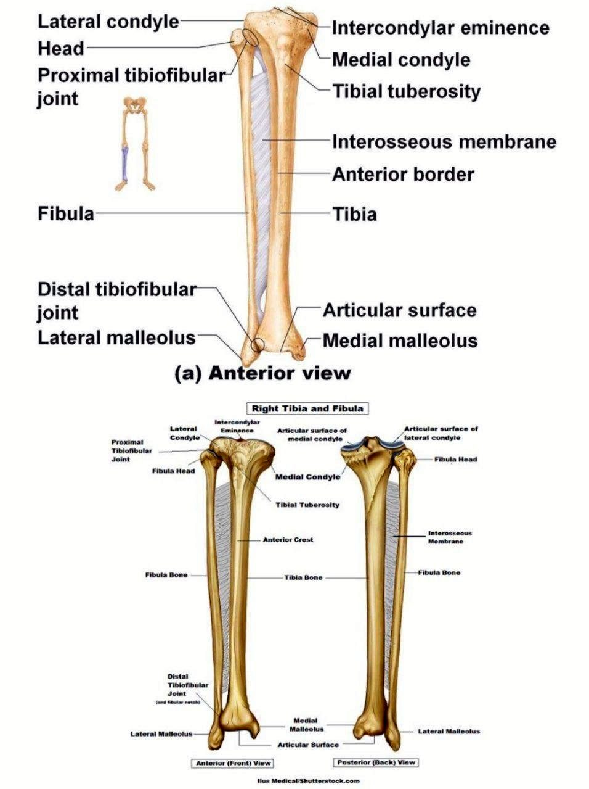
كسور الظنبوبFractures of the Tibia
Fractures of the tibia are relatively common. There are two main types:
كسور الظنبوب شائعة نسبياً. ولها نوعان رئيسيان:
- • High energy trauma – occurs predominantly in the younger population.الإصابات عالية الطاقة: تحدث غالباً عند صغار السن (الشباب).
- • Low energy trauma or insufficiency fractures – occurs predominantly in the elderly.الإصابات منخفضة الطاقة أو كسور القصور: تحدث غالباً عند كبار السن.
Fractures most commonly occur at the shaft of the tibia, and are typically associated with fibula fractures. Fractures of the proximal tibia are known as tibial plateau fractures; the condyles may be broken and injury to the menisci and ligaments of the knee is not uncommon. These fractures are classified using the Schatzker classification, and if very displaced will likely required operative management.
أكثر ما تحدث الكسور في جسم الظنبوب، وعادةً ترافقها كسور في الشظية. وكسور الظنبوب القريب تُعرف بكسور الهضبة الظنبوبية؛ وقد تنكسر اللقمتان، وإصابة الغضاريف الهلالية وأربطة الركبة ليست نادرة. وتُصنَّف هذه الكسور بتصنيف شاتزكر، وإذا كانت منزاحة كثيراً فمن المرجّح أن تحتاج علاجاً جراحياً.
It is important to monitor patients for signs of compartment syndrome in the pre-and post-operative phases.
من المهم مراقبة المرضى بحثاً عن علامات متلازمة الحيّز قبل العملية وبعدها.
At the ankle, the medial malleolus can be fractured. This is caused by the ankle being twisted inwards (over-inversion) – the talus of the foot is forced against the medial malleolus, causing a spiral fracture. This rarely happens in isolation and typically the lateral malleolus is also fractured; potentially producing an unstable fracture that requires operative management.
عند الكاحل قد ينكسر الكعب الإنسي. وسببه التواء الكاحل نحو الداخل (انقلاب زائد)، إذ يُدفع عظم الكاحل بقوة على الكعب الإنسي فيسبّب كسراً حلزونياً. ونادراً ما يحدث منفرداً، وعادةً ينكسر الكعب الوحشي أيضاً، وقد ينتج كسر غير مستقر يحتاج علاجاً جراحياً.
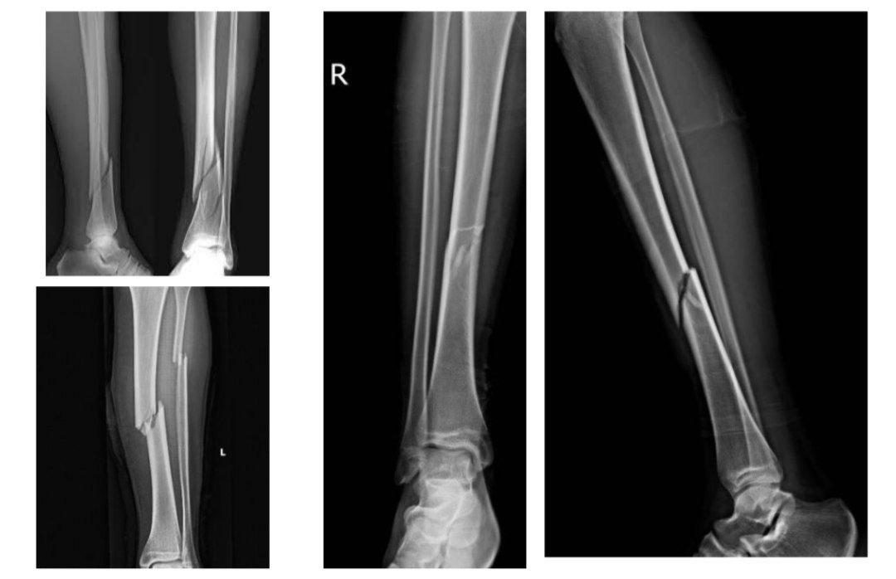
Fracture of the medial malleolus (black arrow) in a child, with the whiting arrow marking a normal growth plate. This is a Salter Harris type III fracture.
كسر في الكعب الإنسي (السهم الأسود) عند طفل، والسهم الأبيض يشير إلى صفيحة نمو طبيعية. وهذا كسر من النوع الثالث حسب تصنيف سالتر هاريس.
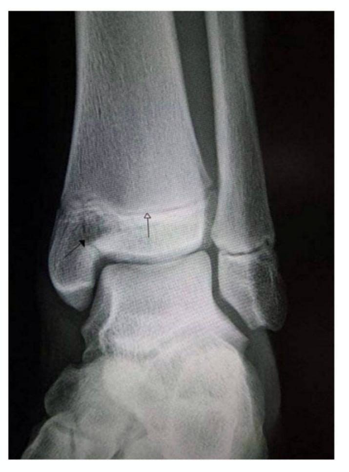
الشظية وكسورهاThe Fibula and Its Fractures
الشظيةThe Fibula
The fibula is a bone located within the lateral aspect of the leg. Its main function is to act as an attachment for muscles, and not as a weight-bearer.
الشظية عظم يقع في الجهة الوحشية من الساق. ووظيفتها الرئيسية أن تكون مرتكزاً للعضلات، لا لتحمّل الوزن.
It has three main articulations:
ولها ثلاثة مفاصل رئيسية:
الجزء القريبProximal
At the proximal end, the fibula has an enlarged head, which contains a facet for articulation with the lateral condyle of the tibia. On the posterior and lateral surface of the fibular neck, the common fibular nerve can be found.
في الطرف القريب للشظية رأس متضخّم، فيه وجيه للتمفصل مع اللقمة الوحشية للظنبوب. وعلى السطحين الخلفي والوحشي لعنق الشظية يوجد العصب الشظوي المشترك.
جسم الشظيةShaft
The fibular shaft has three surfaces – anterior, lateral and posterior. The leg is split into three compartments, and each surface faces its respective compartment e.g anterior surface faces the anterior compartment of
لجسم الشظية ثلاثة سطوح: أمامي، ووحشي، وخلفي. والساق مقسومة إلى ثلاث حجرات، وكل سطح يواجه الحجرة الخاصة به، مثلاً: السطح الأمامي يواجه الحجرة الأمامية من
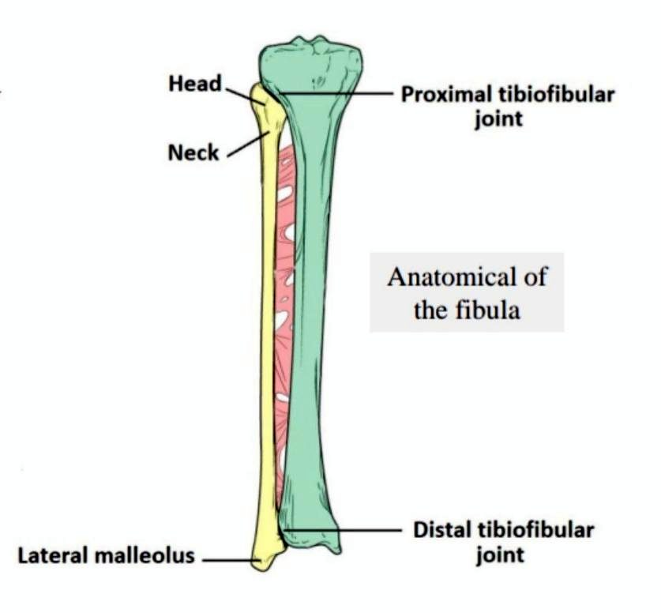
الجزء البعيدDistal
Distally, the lateral surface continues inferiorly, and is called the lateral malleolus. The lateral malleolus is more prominent than the medial malleolus, and can be palpated at the ankle on the lateral side of the leg.
في الأسفل يستمر السطح الوحشي نحو الأسفل ويُسمّى الكعب الوحشي. والكعب الوحشي أكثر بروزاً من الكعب الإنسي، ويمكن جسّه عند الكاحل في الجهة الوحشية من الساق.
كسور الشظيةFractures of the Fibula
At the ankle, the lateral malleolus of the fibula is prone to fracture. There are two main ways in which this occurs.
عند الكاحل يكون الكعب الوحشي للشظية عرضة للكسر. وهناك طريقتان رئيسيتان لحدوث ذلك.
The first way is by forced external rotation of the ankle. This force of the talus magainst the bone causes a spiral fracture of the lateral malleolus.
الطريقة الأولى بالدوران الخارجي القسري للكاحل. وقوة عظم الكاحل على العظم تسبّب كسراً حلزونياً في الكعب الوحشي.
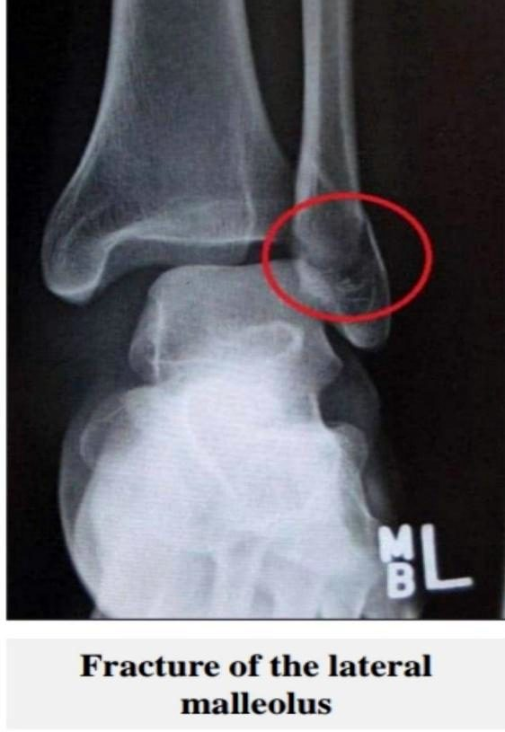
The other, less common way, by the foot being twisted outwards (called eversion). Again, the talus presses against the lateral malleolus, and this time causes a transverse fracture.
والطريقة الأخرى، وهي الأقل شيوعاً، بالتواء القدم نحو الخارج (ويُسمّى الانقلاب الخارجي). ومرةً أخرى يضغط عظم الكاحل على الكعب الوحشي، فيسبّب هذه المرة كسراً مستعرضاً.
تعظّم الظنبوب والشظيةOssification of the Tibia and Fibula
تعظّم الظنبوبOssification of the tibia
The primary ossification centre for the shaft of the tibia appears in the seventh fetal week. A secondary ossification centre is present in the upper end at birth and in the lower end at 2 years. The upper centre fuses with the shaft at 20 years, the lower sooner at 18 years.
يظهر مركز التعظّم الأوّلي لجسم الظنبوب في الأسبوع السابع من الحياة الجنينية. ويوجد مركز تعظّم ثانوي في الطرف العلوي عند الولادة، وفي الطرف السفلي في عمر سنتين. ويلتحم المركز العلوي بالجسم في عمر 20 سنة، والسفلي أبكر في عمر 18 سنة.
تعظّم الشظيةOssification of the fibula
Ossification of the primary centre in the shaft begins in the eighth fetal week, in the lower secondary centre in the first year and in the upper at 3 years. The lower epiphysis fuses with the shaft at 16 years and the upper at 18 years.
يبدأ تعظّم المركز الأوّلي في جسم الشظية في الأسبوع الثامن من الحياة الجنينية، وفي المركز الثانوي السفلي في السنة الأولى، وفي العلوي في عمر 3 سنوات. وتلتحم المشاشة السفلية بالجسم في عمر 16 سنة، والعلوية في عمر 18 سنة.
المظاهر الشعاعيةRadiological Features
المظاهر الشعاعية للظنبوب والشظيةRadiological features of the tibia and fibula
الصور الشعاعية البسيطةPlain radiographs
The appearance of the tibial tuberosity is highly variable, particularly during the growth period. Asymmetry and irregularity on radiographs may be entirely normal. Some irregularity at the upper part of the interosseous border of the tibia may simulate a periosteal reaction in this region.
مظهر حدبة الظنبوب متغيّر جداً، خصوصاً في مرحلة النمو. وقد يكون عدم التناظر وعدم الانتظام في الصور الشعاعية طبيعياً تماماً. وبعض عدم الانتظام في الجزء العلوي من الحافة بين العظمين للظنبوب قد يشبه تفاعلاً سمحاقياً في هذه المنطقة.
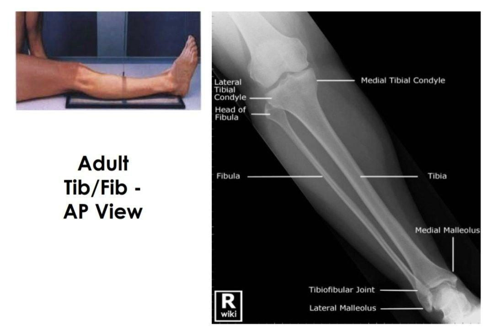
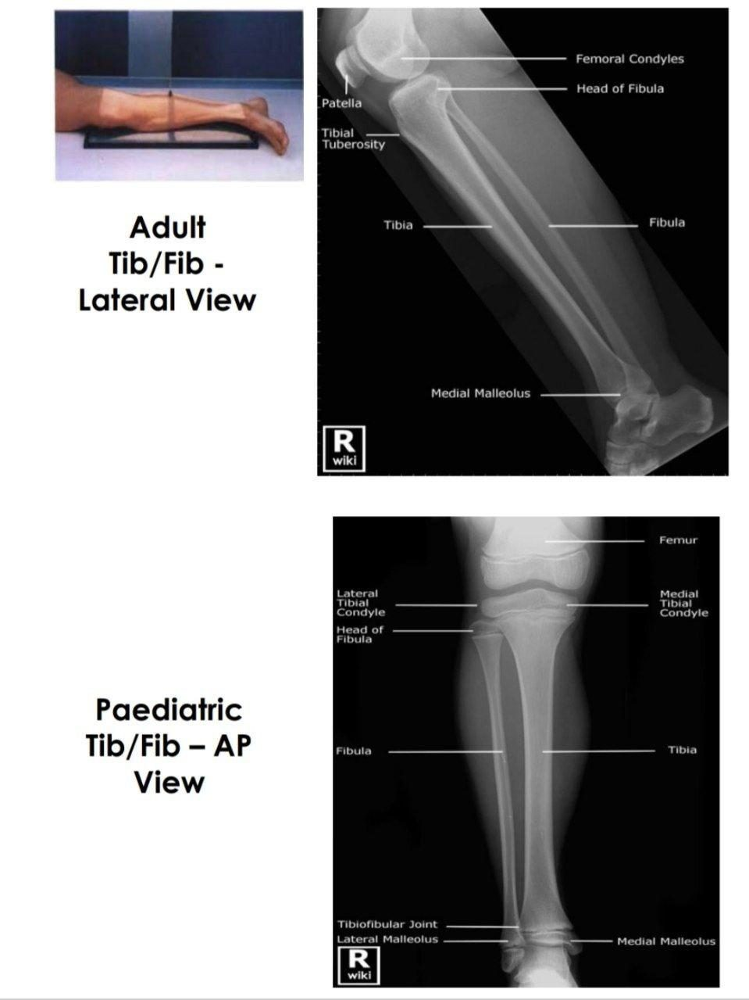
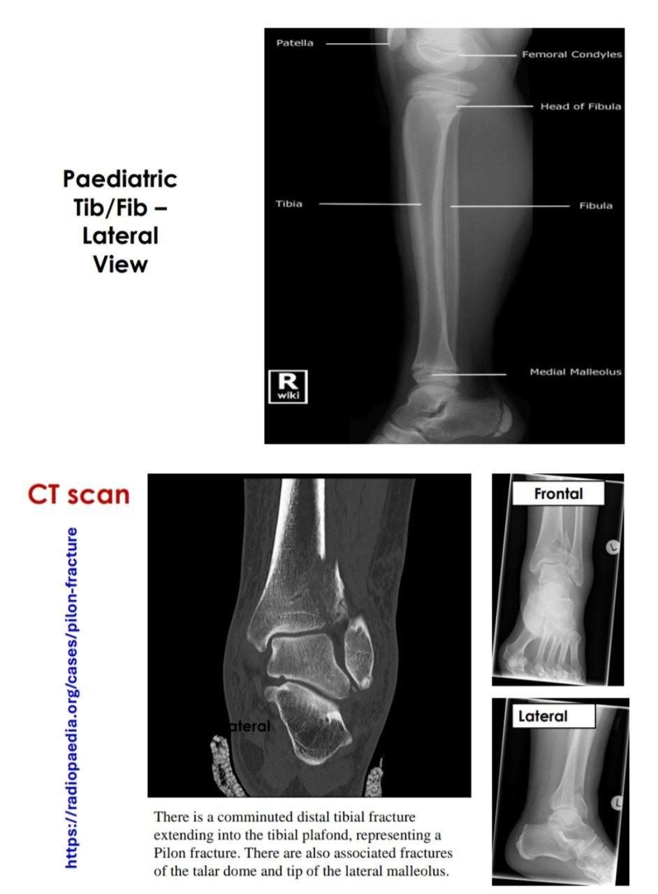
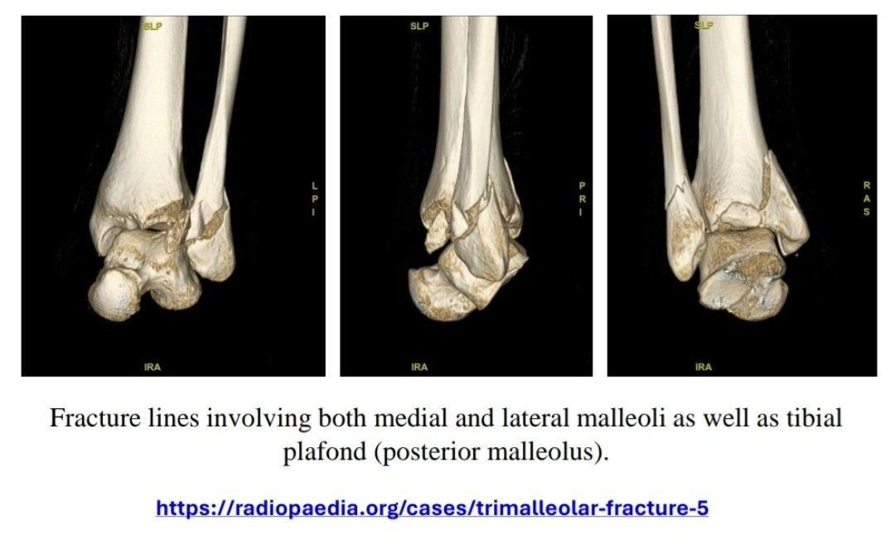
فحص الرنينMRI exam
An MRI of the left tibia and fibula shows sub-periosteal fluid collection and irregular erosion of the medial cortex of the proximal one-third shaft of the tibia, suggesting the possibility of sclerosing osteomyelitis.
يُظهر رنين الظنبوب والشظية الأيسرين تجمّعاً للسائل تحت السمحاق، وتآكلاً غير منتظم في القشرة الإنسية للثلث القريب من جسم الظنبوب، ممّا يشير إلى احتمال التهاب العظم والنقي المُصلِّب.
- • A: anteroposterior viewA: منظر أمامي خلفي (AP)
- • B: lateral viewB: منظر جانبي
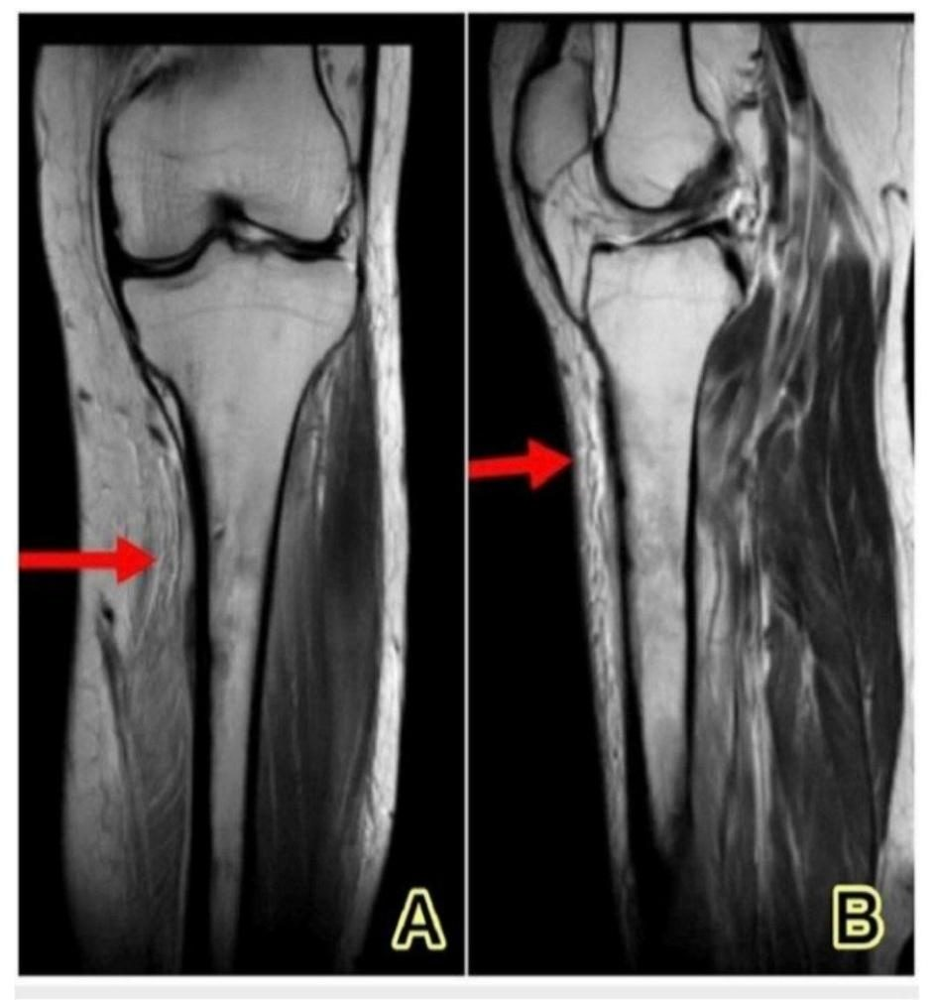
الرضفةThe Patella
The patella (kneecap) is located at the front of the knee joint, within the patellofemoral groove of the femur. Its superior aspect is attached to the quadriceps tendon and inferior aspect to the patellar ligament.
تقع الرضفة (عظم صابونة الركبة) في مقدّمة مفصل الركبة، داخل الأخدود الرضفي الفخذي لعظم الفخذ. ويرتكز جانبها العلوي على وتر العضلة رباعية الرؤوس، وجانبها السفلي على الرباط الرضفي.
It is classified as a sesamoid type bone due to its position within the quadriceps tendon, and is the largest sesamoid bone in the body.
تُصنَّف عظماً سمسمانياً بسبب موقعها داخل وتر العضلة رباعية الرؤوس، وهي أكبر عظم سمسماني في الجسم.
الوظائفFunctions
The patella has two main functions:
للرضفة وظيفتان رئيسيتان:
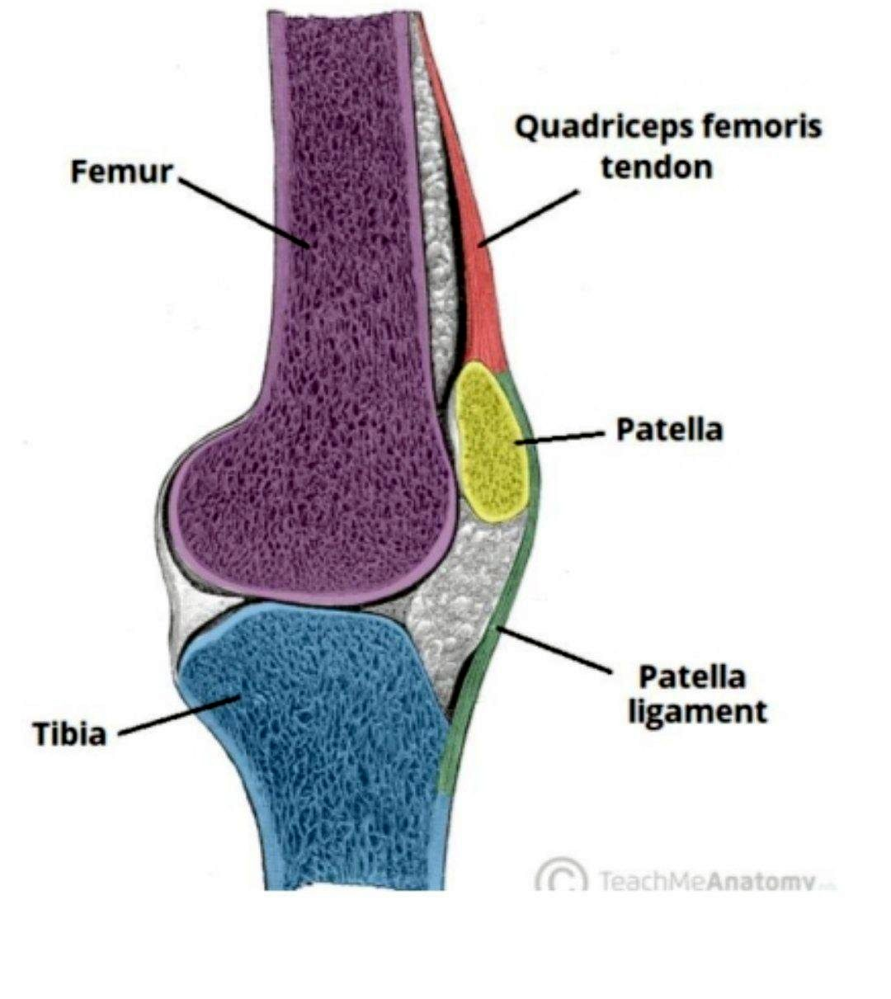
المعالم العظميةBony Landmarks
The patella has a triangular shape, with anterior and posterior surfaces. The apex of the patella is situated inferiorly and is connected to the tibial tuberosity by the patellar ligament. The base forms the superior aspect of the bone and provides the attachment area for the quadriceps tendon.
للرضفة شكل مثلّث، ولها سطحان أمامي وخلفي. وقمّتها في الأسفل، وتتصل بحدبة الظنبوب بالرباط الرضفي. أمّا قاعدتها فتكوّن الجهة العلوية للعظم، وتوفّر مكان ارتكاز وتر العضلة رباعية الرؤوس.
The posterior surface of the patella articulates with the femur, and is marked by two facets:
يتمفصل السطح الخلفي للرضفة مع عظم الفخذ، وفيه وجيهان:
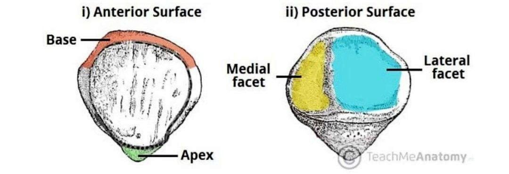
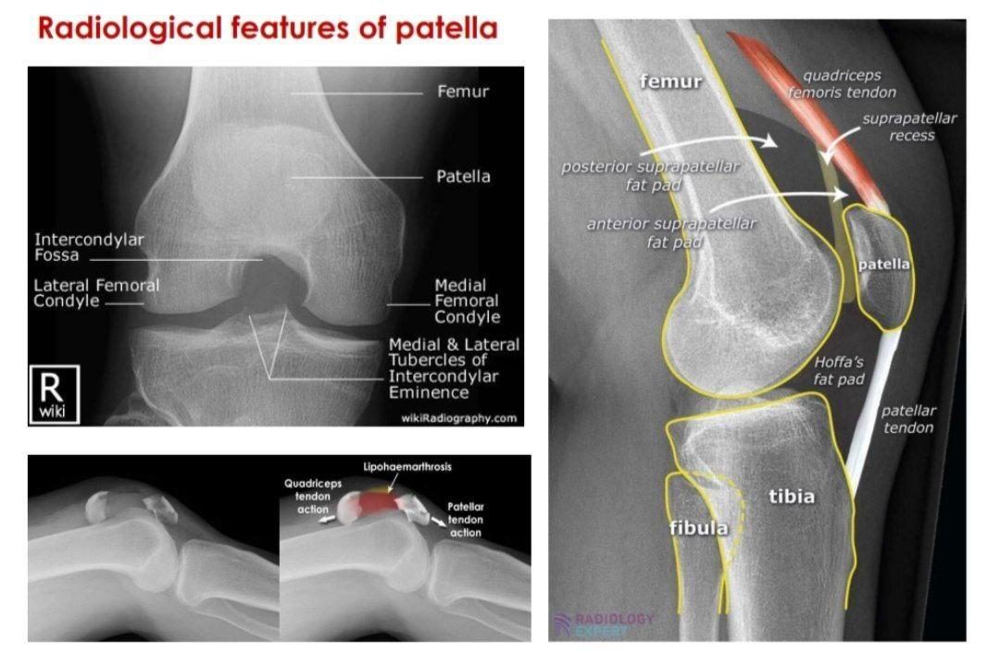
خلع الرضفة وكسرهاPatellar Dislocation and Fracture
خلع الرضفةPatellar Dislocation
In a patellar dislocation, the patella bone is displaced out of the patellofemoral groove. It accounts for around 3% of knee injuries.
في خلع الرضفة تنزاح الرضفة خارج الأخدود الرضفي الفخذي. ويشكّل نحو 3% من إصابات الركبة.
Most dislocations occur laterally and are caused by high force impact on the patella or forceful sudden twisting of the knee. These mechanisms of injury make patellar dislocation more common in individuals participating in sports such as: football, rugby and ice hockey.
أغلب حالات الخلع تكون نحو الوحشي، وسببها صدمة قوية على الرضفة أو التواء مفاجئ وقوي للركبة. وآليات الإصابة هذه تجعل خلع الرضفة أشيع عند من يمارسون رياضات مثل: كرة القدم، والرغبي، وهوكي الجليد.
كسر الرضفةPatellar Fracture
Patellar fractures usually result from direct trauma to the bone, or sudden contraction of the quadriceps muscle. They are more common in males, and in the 20-50 age range. If the patella fractures into fragments, they will usually separate; the proximal fragment displaced superiorly by the quadriceps tendon and the distal fragment pulled inferiorly by the patellar ligament.
كسور الرضفة تنتج عادةً من رضّ مباشر على العظم، أو تقلّص مفاجئ للعضلة الرباعية الرؤوس. وهي أشيع عند الذكور، وفي عمر 20–50 سنة. وإذا انكسرت الرضفة إلى قطع فإنها تتباعد عادةً: القطعة القريبة تنسحب نحو الأعلى بوتر العضلة رباعية الرؤوس، والقطعة البعيدة تنسحب نحو الأسفل بالرباط الرضفي.
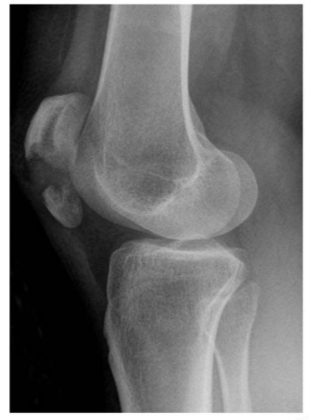
![Lateral bipartite patella (AP and skyview), trauma radiographs of the patella and an open fracture of the patella; CT scan of patella: axial knee image with labels (articular surface, lateral and medial patellar retinaculum, infrapatellar synovial fold, anterior cruciate ligament, lateral epicondyle, lateral condyle, fibular collateral ligament, popliteus tendon, biceps femoris, patella, patellar surface, femur, intercondylar fossa, medial epicondyle, tibial collateral ligament, posterior cruciate ligament, medial condyle, gracilis, semimembranosus and semitendinosus tendons).](fig/patella-xrays-ct-916.webp)
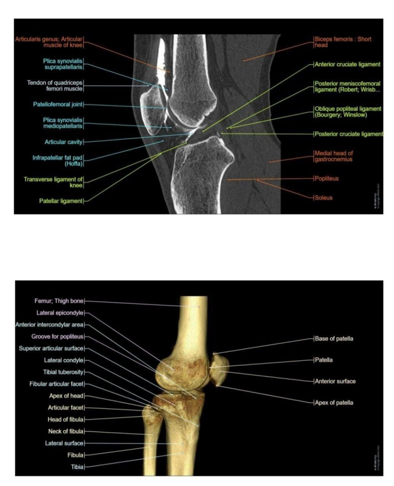
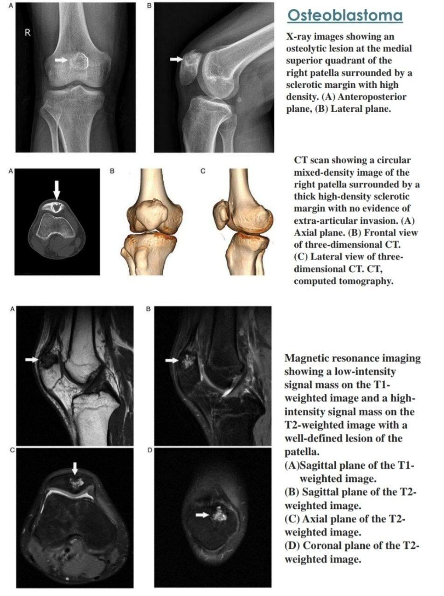
مركز تعظّم الرضفةOssification Center of Patella
The patella has a primary ossification center that typically appears between the ages of 2 and 6, though this can vary by gender.
للرضفة مركز تعظّم أوّلي يظهر عادةً بين عمر 2 و6 سنوات، مع أنّ ذلك قد يختلف حسب الجنس.
Multiple ossification centers can also appear, especially in the superolateral aspect, which may lead to anatomical variants like a bipartite patella. These primary and any secondary centers eventually fuse, with fusion being completed around puberty.
وقد تظهر أيضاً مراكز تعظّم متعدّدة، خصوصاً في الجهة العلوية الوحشية، ممّا قد يؤدّي إلى متغيّرات تشريحية مثل الرضفة ثنائية الأجزاء. وتلتحم هذه المراكز الأوّلية وأيّ مراكز ثانوية في النهاية، ويكتمل الالتحام نحو سنّ البلوغ.
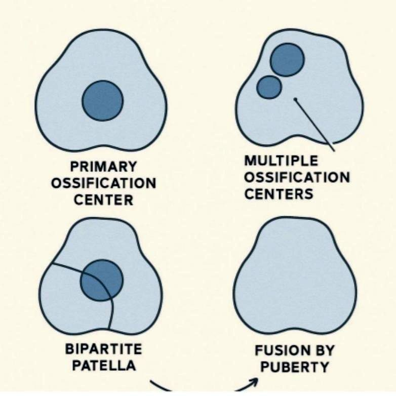
المحاضرة مسموعة
نص الأستاذ بالإنكليزي مثل الأصل · 8.9 دقيقة. اضغط أي جملة تسمعها، أو مصطلح منقّط تسمع لفظه ومعناه.
The Tibiaالظنبوب (قصبة الساق)
The Tibia
The tibia is the main bone of the lower leg, forming what is more commonly known as the shin.
It expands at its proximal and distal ends; articulating at the knee and ankle joints respectively. The tibia is the second largest bone in the body and it is a key weight-bearing structure.
Proximal Tibiaالجزء القريب من الظنبوب
Proximal Tibia
Proximal
The proximal tibia is widened by the medial and lateral condyles, which aid in weight-bearing. The condyles form a flat surface, known as the tibial plateau. This structure articulates with the femoral condyles to form the key articulation of the knee joint.
Located between the condyles is a region called the intercondylar eminence – this projects upwards on either side as the medial and lateral intercondylar tubercles. This area is the main site of attachment for the ligaments and the menisci of the knee joint.
The intercondylar tubercles of the tibia articulate with the intercondylar fossa of the femur.
The tibial plateau. The tibial condyles articulate with the femoral condyles to form the knee joint
Shaft of the Tibiaجسم الظنبوب
Shaft of the Tibia
Shaft
The shaft of the tibia is prism-shaped, with three borders and three surfaces; anterior, posterior and lateral. For brevity, only the anatomically and clinically important borders/surfaces are mentioned here.
Distal Tibiaالجزء البعيد من الظنبوب
Distal Tibia
Distal
The distal end of the tibia widens to assist with weight-bearing.
The medial malleolus is a bony projection continuing inferiorly on the medial aspect of the tibia. It articulates with the tarsal bones to form part of the ankle joint. On the posterior surface of the tibia, there is a groove through which the tendon of tibialis posterior passes.
Laterally is the fibular notch, where the fibula is bound to the tibia – forming the distal tibiofibular joint.
Fractures of the Tibiaكسور الظنبوب
Fractures of the Tibia
Fractures of the tibia are relatively common. There are two main types:
High energy trauma – occurs predominantly in the younger population.
Low energy trauma or insufficiency fractures – occurs predominantly in the elderly.
Fractures most commonly occur at the shaft of the tibia, and are typically associated with fibula fractures. Fractures of the proximal tibia are known as tibial plateau fractures; the condyles may be broken and injury to the menisci and ligaments of the knee is not uncommon. These fractures are classified using the Schatzker classification, and if very displaced will likely required operative management.
It is important to monitor patients for signs of compartment syndrome in the pre-and post-operative phases.
At the ankle, the medial malleolus can be fractured. This is caused by the ankle being twisted inwards (over-inversion) – the talus of the foot is forced against the medial malleolus, causing a spiral fracture. This rarely happens in isolation and typically the lateral malleolus is also fractured; potentially producing an unstable fracture that requires operative management.
Fracture of the medial malleolus (black arrow) in a child, with the whiting arrow marking a normal growth plate. This is a Salter Harris type III fracture.
The Fibula and Its Fracturesالشظية وكسورها
The Fibula and Its Fractures
The Fibula
The fibula is a bone located within the lateral aspect of the leg. Its main function is to act as an attachment for muscles, and not as a weight-bearer.
It has three main articulations:
Proximal
At the proximal end, the fibula has an enlarged head, which contains a facet for articulation with the lateral condyle of the tibia. On the posterior and lateral surface of the fibular neck, the common fibular nerve can be found.
Shaft
The fibular shaft has three surfaces – anterior, lateral and posterior. The leg is split into three compartments, and each surface faces its respective compartment e.g anterior surface faces the anterior compartment of
Distal
Distally, the lateral surface continues inferiorly, and is called the lateral malleolus. The lateral malleolus is more prominent than the medial malleolus, and can be palpated at the ankle on the lateral side of the leg.
Fractures of the Fibula
At the ankle, the lateral malleolus of the fibula is prone to fracture. There are two main ways in which this occurs.
The first way is by forced external rotation of the ankle. This force of the talus magainst the bone causes a spiral fracture of the lateral malleolus.
The other, less common way, by the foot being twisted outwards (called eversion). Again, the talus presses against the lateral malleolus, and this time causes a transverse fracture.
Ossification of the Tibia and Fibulaتعظّم الظنبوب والشظية
Ossification of the Tibia and Fibula
Ossification of the tibia
The primary ossification centre for the shaft of the tibia appears in the seventh fetal week. A secondary ossification centre is present in the upper end at birth and in the lower end at 2 years. The upper centre fuses with the shaft at 20 years, the lower sooner at 18 years.
Ossification of the fibula
Ossification of the primary centre in the shaft begins in the eighth fetal week, in the lower secondary centre in the first year and in the upper at 3 years. The lower epiphysis fuses with the shaft at 16 years and the upper at 18 years.
Radiological Featuresالمظاهر الشعاعية
Radiological Features
Radiological features of the tibia and fibula
Plain radiographs
The appearance of the tibial tuberosity is highly variable, particularly during the growth period. Asymmetry and irregularity on radiographs may be entirely normal. Some irregularity at the upper part of the interosseous border of the tibia may simulate a periosteal reaction in this region.
MRI exam
An MRI of the left tibia and fibula shows sub-periosteal fluid collection and irregular erosion of the medial cortex of the proximal one-third shaft of the tibia, suggesting the possibility of sclerosing osteomyelitis.
A: anteroposterior view
B: lateral view
The Patellaالرضفة
The Patella
The patella (kneecap) is located at the front of the knee joint, within the patellofemoral groove of the femur. Its superior aspect is attached to the quadriceps tendon and inferior aspect to the patellar ligament.
It is classified as a sesamoid type bone due to its position within the quadriceps tendon, and is the largest sesamoid bone in the body.
Functions
The patella has two main functions:
Bony Landmarks
The patella has a triangular shape, with anterior and posterior surfaces. The apex of the patella is situated inferiorly and is connected to the tibial tuberosity by the patellar ligament. The base forms the superior aspect of the bone and provides the attachment area for the quadriceps tendon.
The posterior surface of the patella articulates with the femur, and is marked by two facets:
Patellar Dislocation and Fractureخلع الرضفة وكسرها
Patellar Dislocation and Fracture
Patellar Dislocation
In a patellar dislocation, the patella bone is displaced out of the patellofemoral groove. It accounts for around 3% of knee injuries.
Most dislocations occur laterally and are caused by high force impact on the patella or forceful sudden twisting of the knee. These mechanisms of injury make patellar dislocation more common in individuals participating in sports such as: football, rugby and ice hockey.
Patellar Fracture
Patellar fractures usually result from direct trauma to the bone, or sudden contraction of the quadriceps muscle. They are more common in males, and in the 20-50 age range. If the patella fractures into fragments, they will usually separate; the proximal fragment displaced superiorly by the quadriceps tendon and the distal fragment pulled inferiorly by the patellar ligament.
Ossification Center of Patellaمركز تعظّم الرضفة
Ossification Center of Patella
The patella has a primary ossification center that typically appears between the ages of 2 and 6, though this can vary by gender.
Multiple ossification centers can also appear, especially in the superolateral aspect, which may lead to anatomical variants like a bipartite patella. These primary and any secondary centers eventually fuse, with fusion being completed around puberty.
كل أسئلة المحاضرة: السؤال إنكليزي وتحته عربي، وكل خيار بلغتين، والجواب الصحيح معلّم ويّاه «ليش صح» · 0.4 MB
قراءة الأسئلة تحميلاضغط أي مصطلح منقّط تسمع لفظه ومعناه.